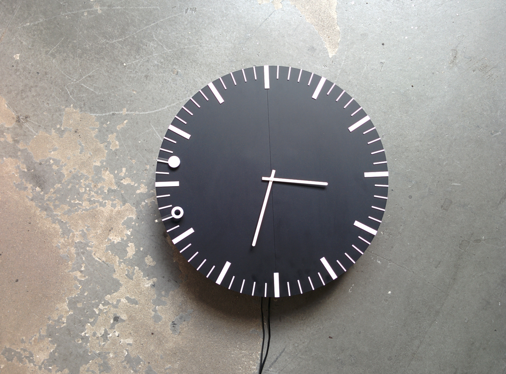
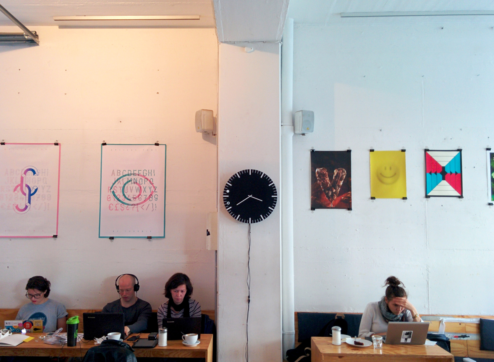
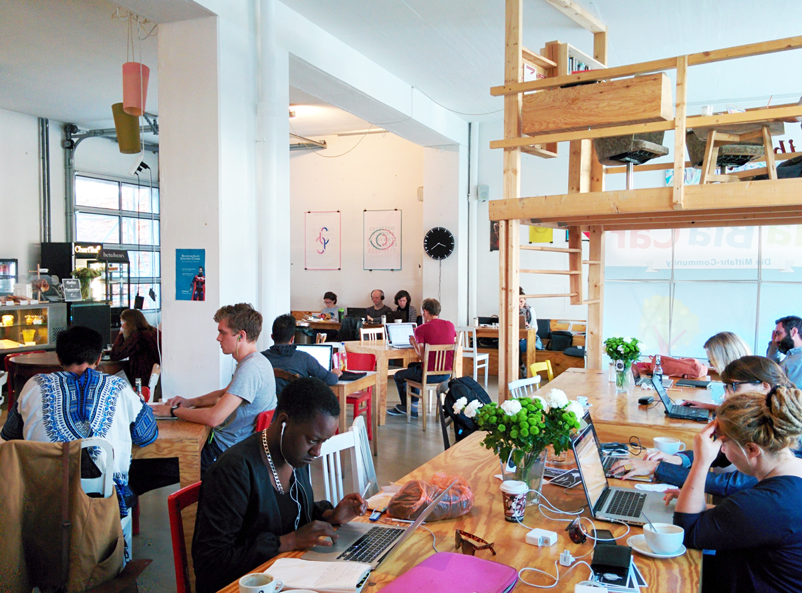

Superclock
2014 - ongoing, Berlin. IOT wall clock
Arduino, custom HW, Java
Collaborators: Jose Ernesto Rodriguez, Giuseppe Burdo
Superclock is an internet connected wall clock that shows you when the next public transport is coming.
The project started as cityboarding back in London and evolved into Superclock after Tito borrowed and worked on the concept for a university course.
Tired of the "unphysicality" of touchscreens and smartphones we want to investigate new forms of interaction and to challenge, from a design point of view, an everyday object as the clock.
We believe we can design, prototype and produce a smart connected object leaving the user with an analog visual and interactive experience.
Currently, we are prototyping the clock at Betahaus in Berlin
  